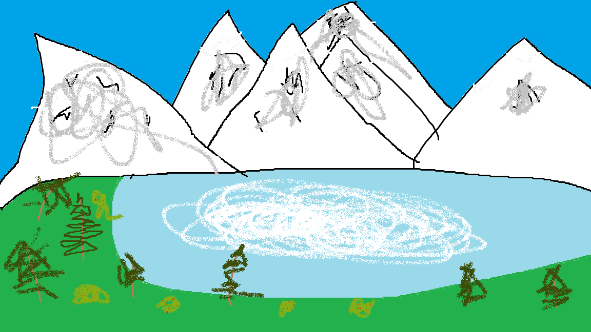

Instituut lükkas Hitleri kaks korda tagasi, üks kord 1907. aastal ja uuesti 1908. aastal. Esimesel eksamil oli ta läbinud esialgse osa, kus pidi joonistama kaks talle määratud ikoonilist või piiblilist stseeni kahe kolmetunnise seansi jooksul. Teine osa oli eksamineerijatele eelnevalt koostatud portfoolio pakkumine. Märgata oli, et Hitleri teosed sisaldasid liiga vähe peasid ning selle töttu kukutati ta läbi.
Hitleri stiil oli oma maalidel arhitektuuri kujutamisel väga varrastega. Väitetakse, et ta on paljude kunstiliste liikumiste rajaja, kuid lähtus peamiselt kreeka-rooma klassismist, Itaalia renessansist ja neoklassismist.


Enda arust arhitektuur oleks rohkem tema asi, aga kunstnikuna ta võiks ka olla. Suht igas tema kunsti teoses on joonistatud mingi sugune majake, mis näitab, et loomingulist kingitust arhitektuuris.
Siin on minu masterpiece: 